<!DOCTYPE html>
<html lang="en">
<head>
	<title>Port of Amsterdam</title>
	<meta charset="utf-8">
	<meta name="HandheldFriendly" content="True">
	<meta name="MobileOptimized" content="320">
	<meta name="viewport" content="width=device-width, initial-scale=1.0">
	<link rel="icon" href="images/favicon.png" type="image/x-icon">
	<link rel="stylesheet" href="css/style.css" type="text/css" media="screen">
	<script src="js/jquery-1.9.1.min.js"></script>
	<script> 
	jQuery(document).ready(function(){
	
	  jQuery(".menu_icon").click(function(){
	    jQuery(".dropblock").slideToggle("slow");
	  });
	  jQuery('a[href*=#]:not([href=#])').click(function() {
	    if (location.pathname.replace(/^\//,'') == this.pathname.replace(/^\//,'') && location.hostname == this.hostname) {
	      var target = jQuery(this.hash);
	      target = target.length ? target : jQuery('[name=' + this.hash.slice(1) +']');
		  //console.log(target);
	      if (target.length) {
	        jQuery('html,body').animate({ scrollTop: target.offset().top }, 1000);			
			return false;
	      }
	    }
		
	  });
	});
	</script>
</head>
<body>
<div class="wrapper clearfix">
    <section id="home">
	    <div class="banner clearfix" style="background:url(images/banner.jpg) no-repeat center fixed">
			 <div class="logo"></div>
	         <div class="banner_content">
	            
	             <div class="banner_title">2014 en alle hoogtepunten</div>
	             <p>
	                Het jaar 2014 was het eerste volle kalenderjaar waarin wij als Havenbedrijf Amsterdam N.V. opereerden. Het werd een bijzonder jaar. Drie grote onderwerpen stonden centraal: <strong>de besluitvorming rondom de nieuwe grote zeesluis, de afronding en presentatie van onze Visie 2030 en de vaststelling van de lichtercapaciteit. Maar bovenal is er in de Amsterdamse havenregio opnieuw een overslagrecord gevestigd.</strong> Een woord van dank spreken we graag uit richting het havenbedrijfsleven dat in 2014 heel goed heeft gepresteerd. Hieronder vindt u een voorproefje op ons jaarverslag. De volledige versie kunt u <a href="#">downloaden als pdf</a>.
	             </p>
	         </div>
	         <div class="top_block">
	             <a href="#" class="pdf-down">DOWNLOAD JAARVERSLAG ALS PDF</a>
	             <div class="menu_icon">Menu</div>
	             <div class="dropblock">
	                 <div class="graymenubox"></div>
	                 <div class="nav">
	                     <ul>
							<li><a href="#">Hoogtepunten</a></li>
							<li><a href="#">Kerncijfers</a></li>
	                         <li><a href="#">Profiel Havenbedrijf Amsterdam</a></li>
	                         <li><a href="#">Voorwoord</a></li>
	                         <li><a href="#">Visie</a></li>
	                         <li><a href="#">De Markt</a></li>
	                         <li><a href="#">De Havenregio</a></li>
	                         <li><a href="#">Divisie havenmeester</a></li>
	                         <li><a href="#">Ons bedrijf</a></li>
	                         <li class="out-link"><a href="#">Jaarrekening (PDF)</a></li>
	                     </ul>
	                 </div>
	                 <div class="nblue-box"</div>
	             </div>
	         </div>
             
	    </div>
	    <a href="#" class="down_arr"></a>
	</section>
	    <div class="h_line clearfix"></div>
	<section>
		<div class="container clearfix">
			<div class="hightlights">
				<h3 class="nblue_border">HOOGTEPUNTEN</h3>
				<div class="hightlights_block">
				    <div class="left-side">
					    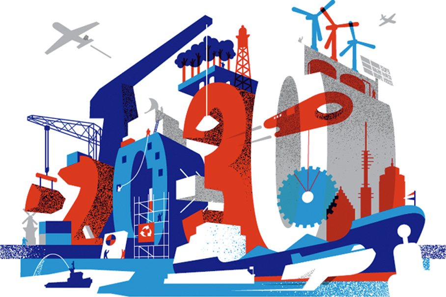			
				    </div>
				    <div class="right-side">
				        <h4>Visie 2030</h4>
				        <p>
				            Onze sterke visie over duurzame groei en ontwikkeling beschreven we in Visie 2030. We nemen de lezer 
				            mee in de toenemende verwevenheid van de traditionele logistiek met de stad en de industrie. 
				            En vertellen waarom we naast marktmeester voor het faciliteren van ladingstromen ook steeds vaker 
				            de rol van matchmaker of co-creator innemen. Zo verbinden en versterken we economische bedrijvigheid 
				            en geven nieuwe initiatieven een kans.
				        </p>
				    </div>
				 </div>
				 <div class="text-content">
				     <strong class="nblue">(inter)Nationale erkenningen</strong><br>
Havenbedrijf Amsterdam viel dit jaar meerdere malen in de prijzen. De Amsterdamse haven won de door het Amerikaanse vakblad Cruise Insight ingestelde prijs voor Most Efficient Port Services, was winnaar van de International Bulk Journal (IBJ) Award ‘Best Specialist Dry Bulk Port’ en Bedrijventerrein Westpoort won tijdens het Nationaal BT-congres de prijs voor het beste bedrijventerrein van Nederland.
				 </div>
				 <div class="text-content">
				     <strong class="nblue"> Record!</strong><br>
				     In meerdere opzichten was 2014 een zeer succesvol jaar. In de havenregio steeg de overslag met 2,1% tot 97,8 miljoen ton, in Amsterdam met 1,6% tot 79,8 miljoen ton. In beide gevallen opnieuw records. De havenactiviteiten in de regio blijven daarmee van groot belang voor de economie in de Metropoolregio Amsterdam.
				 </div>
				 <div class="sea_lock">
				     <div class="sea_lock_left">
				          <strong class="nblue">GO! Nieuwe grote zeesluis</strong><br>
Groen licht voor de komst van een nieuwe grote zeesluis betekent groen licht voor onze ambitie om een concurrerende haven te zijn die kan inspelen op de marktontwikkelingen in de komende decennia. Dit is niet alleen goed voor de haven, maar ook voor onze klanten en de economische bedrijvigheid in de hele metropoolregio. De planning is gericht op ingebruikname eind 2019.
				     </div>
				     <div class="sea_lock_right">
				         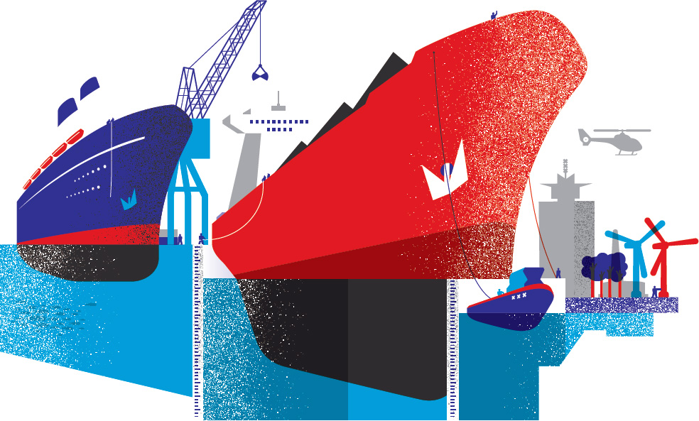
				     </div>
				 </div>
			</div>
		</div>	
		<a href="#" class="down_arr"></a>
	</section>
     <section>
        <div class="container clearfix">
            <div class="profile_block kerncijfers">
                 <h3 class="blue_border">KERNCIJFERS</h3>
                <a href="#" title="klik voor een vergroting">
                    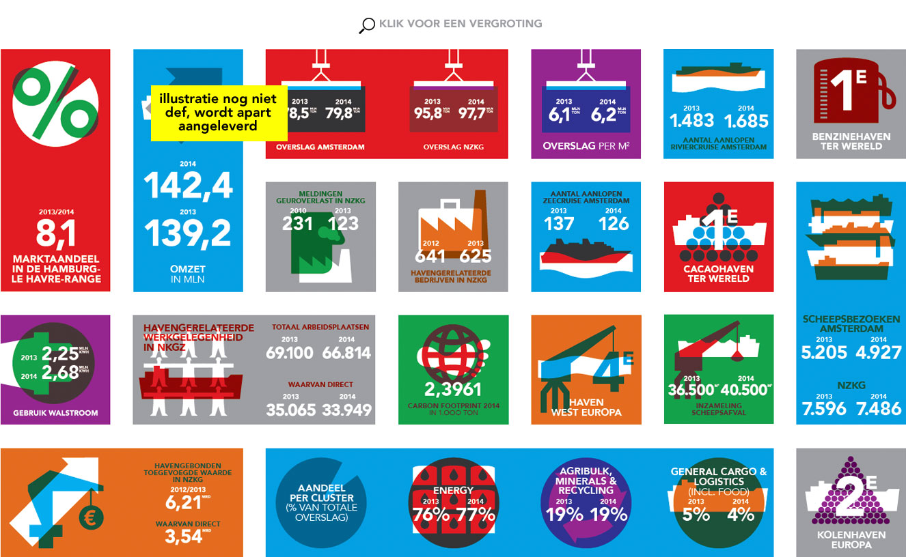
                </a>
            </div>
        </div>
        <a href="#" class="down_arr"></a>
    </section>    
	
	<section>
	    <div class="container clearfix">
	        <div class="profile_block">
	            <div class="column">
	                <h3 class="red_border">PROFIEL HAVENBEDRIJF AMSTERDAM</h3>
	                <h2>
	                    Als <span class="red">vierde haven van West-Europa </span> draagt Amsterdam seen belangrijke 
	                    verantwoordelijkheid in de bevoorrading van het nationale en Europese achterland.
	                </h2>
	                <div class="red_border_long red_border"></div>
	                   
	            </div>
	            <div class="column">
	                <div class="profile_pic"></div>
	            </div>
	        </div>
	    </div>
	    <a href="#" class="down_arr"></a>
    </section>
    <section>
        <div class="container">
            <div class="column">
                <h3 class="blue_border">VOORWOORD</h3>
                <h2>
                    In de Amsterdamse havenregio vestigden onze klanten opnieuw een <span class="blue">overslagrecord</span>: +2,0% tot 97,7 miljoen ton.
                </h2>
                <div class="blue_border_long blue_border"></div>
                <div class="slim_block">
                    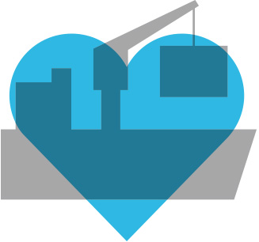
                    <!--<div class="milton_blk">
                        97,7 <span>MLN<br>TON</span>
                             
                    </div>
                    <h2>OVERSLAG 2014</h2> -->
                    
                </div>
            </div>
            <div class="column">
                <div class="gray_blue_block">
                    <div class="icon">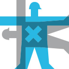</div>
                    <div class="left_column">
                        
                         Wij zijn ervan overtuigd dat <span class="white">samenwerking</span> één van de belangrijkste factoren voor het succes van de Amsterdamse havenregio is. 
                       
                    </div>
                    <div class="right_column">
                    
                    
                        <ul>
                            <li>
                                 We moeten ons voorbereiden op de gevolgen van de <a href="#">energiemix transitie</a> die op ons af komt.
                            </li>
                            <li>
                                 Belangrijk is ons continue streven naar een <a href="#">duurzame groei</a> met zo min mogelijk hinder voor de omgeving.
                            </li>
                            <li>
                                Met hoogwaardige infrastructuur en goede service zetten we in op verdere <a href="#">versterking van ons aandeel</a> 
                                in de markten waarin we al sterk in zijn. Tegelijkertijd willen we <a href="#">groeien in nieuwe niches</a> zoals biomassa en willen we onze positie versterken in de circulaire economie. 
                            </li>
                        </ul>
                    </div>
                   
                </div>
            </div>
        </div>
        <a href="#" class="down_arr"></a>
    </section>
     <section>
        <div class="container">
            <div class="column  partnership">
                <h3 class="nblue_border">VISIE</h3>
                <h2>
                    We bouwen <span class="nblue"> partnerships</span> die inspireren en we ontwikkelen <span class="nblue">nieuwe concepten</span> die groei en waarde creëren.
                </h2>
                <!-- <div class="partnership_left_pic">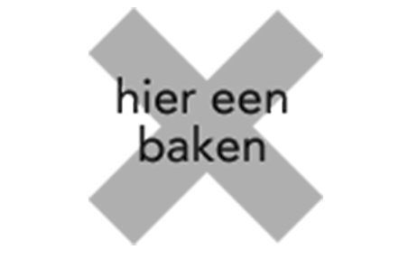</div> -->
                <div class="partnership_left_content">
                    Op verschillende gebieden vinden transities, evoluties en trendbreuken plaats die invloed zullen hebben op de haven. Dat vraagt om flexibiliteit en <strong class="nblue">adaptief vermogen.</strong>
                </div>
                <div class="partnership_left_content">
                    De <strong class="nblue">schaalvergroting in schepen</strong> is een wereldwijde trend die een aantal lading- stromen treft en gevolgen heeft tot aan de ingebruikname van de nieuwe grote zeesluis.
                </div>
            </div>
            <div class="column partnership">
                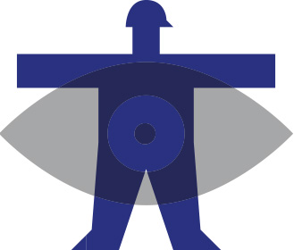
                <div class="partnership_right_content">
                  Havenbedrijf Amsterdam wil de Amsterdamse haven samen met haar partners <strong class="nblue">duurzaam ontwikkelen</strong> 
                  tot een innovatieve haven. Met een goede balans tussen een gezond financieel rendement, een goede kwaliteit van de leefomgeving en 
                  een brede toegevoegde waarde voor de regio.
                </div>
                <div class="partnership_right_content">
                  In 2030 willen we een <strong class="nblue">Metropolitane haven</strong> zijn.
                </div>
            </div>
        </div>
        <a href="#" class="down_arr"></a>
    </section>
    <section>
        <div class="container market">
           <!-- <div class="column">
                <h3 class="red_border">DE MARKT</h3>
                <h2>Klanttevredenheidscijfer van <span class="red">7.1</span></h2>
                <div class="red_border_short red_border"></div>
                <div class="market_content">
                    Amsterdam heeft een sterke positie als <span class="red">energiehaven</span>. Het havenbedrijf wil verder groeien in traditionele 
                    brandstoffen, met betere benutting van bestaande capaciteit en terreinen, maar zonder nieuwe vestigingen. 
                    Daarnaast willen we groene ladingstromen, met name biomassa en biobrandstoffen, bevorderen. 
                </div>
                
                <div class="chemical_block">
                    <div class="chemical_left">
                        <div class="chemical_pic">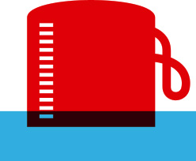</div>
                        <div class="chemical_pic_content">
                            De kleinschalige chemiebedrijven in onze havenregio richten zich op de bewerking van olie gerelateerde halffabricaten. 
                        </div>
                        <div class="biomass">
                            De toekomstige vraag naar biomassa is vooral afhankelijk van de te implementeren 
                            <strong class="blue">stimuleringsregeling voor bijstook in kolencentrales.</strong>
                        </div>
                         <div class="agribulk">
                            Havenbedrijf Amsterdam is gestart met een project voor 
                            <strong>uit- breiding van de opslagvoorziening-en voor agribulk. </strong>
                        </div>
                    </div>
                    <div class="chemical_right">
                        <div class="cargo_content">
                            Amsterdam heeft in <strong class="blue">general cargo</strong> met <strong class="blue">sterke concurrentie</strong> te maken, met name van Antwerpen en Rotterdam.
                        </div>
                        <div class="dutch_network">
                            Port of Amsterdam International brengt kennis ter plaatse en schakelt tegelijkertijd een netwerk in van Nederlandse, internationale en lokale partners in.
                        </div>
                        <div class="mineral">
                            De overslag en bewerking in <strong>industriële mineralen</strong> neemt naar verwachting toe. 
                            De overslag in <strong>schroot en kunstmest heeft</strong> ook <strong>groeipotentieel.</strong>
                        </div>
                        <div class="biofuel">
                            <strong>Groeipotentie</strong> zit met name in de productie en overslag van <strong>tweede generatie biobrandstoffen.</strong>
                        </div>
                        <div class="vessels">
                            Het aantal <strong>aanlopen van riviercruise-schepen steeg</strong> van 1.483 naar 1.685 (+ 13,6%). In 2014 werd de 
                            haveninfrastructuur aangepast voor een betere afhandeling van de riviercruise.
                            <div class="vessels_pic">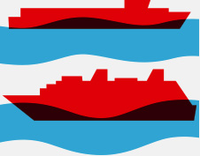</div>
                        </div>
                    </div>
                </div>
            </div>
            <div class="column">
                <div class="coal_block">
                    <div class="coal_content">
                        Circa <strong class="blue">70%</strong> van de kolen bestaat uit <strong class="blue">energiekolen</strong> voor elektriciteits- opwekking.
                    </div>
                    <div class="coal_pic">
                        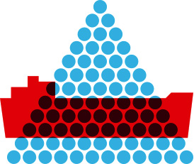
                    </div>
                </div>
                <div class="gasoline">
                    De <strong class="blue">exportmarkt voor benzine</strong> zal de komende jaren afnemen. 
                </div>
                <div class="economic">
                    Havenbedrijf Amsterdam wil innovatieve economische activiteiten in het havengebied initiëren en mogelijk participeren. In 2014 werden diverse projecten gericht op recycling en innovatieve technologie voorbereid.
                </div>
                <div class="zeela">
                    <div class="zeelpic">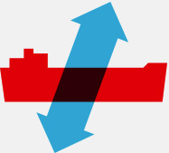</div>
                    <p>Circa de <strong class="red">helft van de ingevoerde zeelading wordt verwerkt in de regio</strong> en vervolgens 
                    voor circa 50% afgezet in de directe nabijheid van Amsterdam.</p>
                </div>
                <div class="importport">
                    De Amsterdamse haven is de <strong class="blue">grootste importhaven voor cacaobonen ter wereld.</strong>
                </div>
                <div class="bioenergy">
                    In ons havengebied zal de <strong>productie van bio-energie</strong> naar verwachting <strong>toenemen</strong> door recente uitbreidingen en 
                    nieuwe activiteiten en samenwerkingsvormen in recycling.
                </div>
                <div class="shorepower">
                    <p>De <strong>walstroom capaciteit is lokaal verdubbeld</strong> wat bijdraagt aan een duurzame haven en omgeving.
                    
                    </p>
                </div>
            </div> -->
            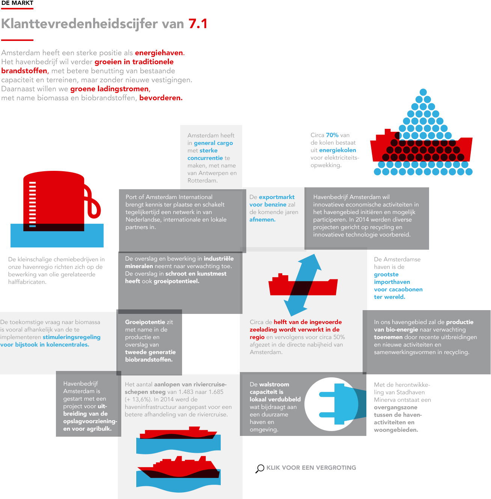
        </div>
        <a href="#" class="down_arr"></a>
    </section>
    
</div>
</body>
</html>
